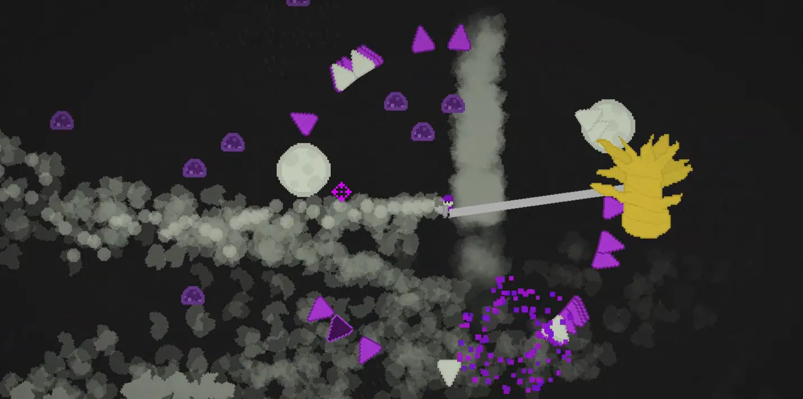

Initially developed for Ludum Dare 46 before later being fleshed out, “It's About Slime” is an arcade game in which a gang of milkmen, each with different milky movesets, keep the last milk trees alive against infinite hoards of purple slimes. Through fleshing out this game's different maps, player characters, and multiplayer mode, I pushed my skills with balancing different movesets, creating diverse and highly-replayable gameplay that still provides a fair challenge across combinations. Additionally, I worked throughout the game's iteration to increase and hone game feel, ending in a simple yet unique and satisfying arcade experience.

All work